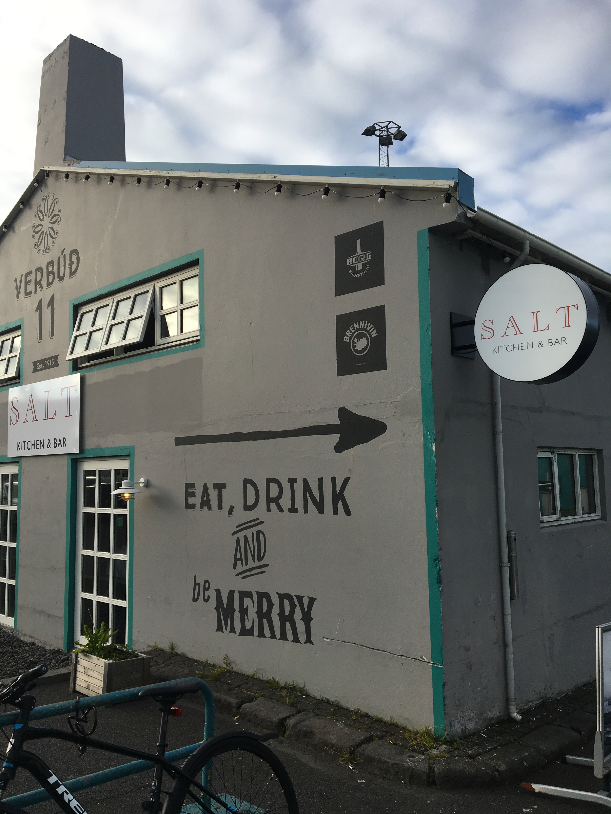
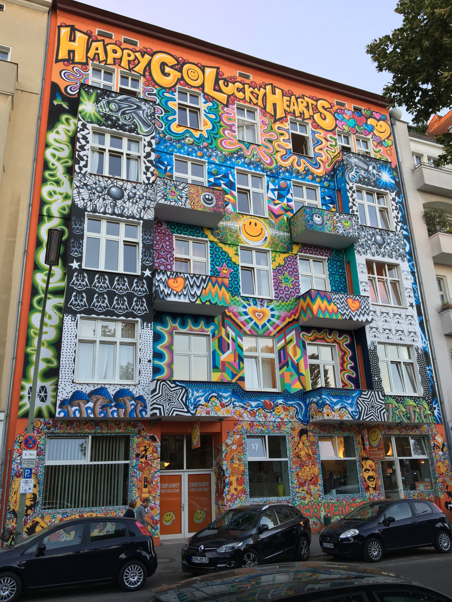

Week 1
Mon 16 July 2018 by nolanfeenyIceland

On my way to Berlin, I had a 19 hour layover in Iceland from July 5-6. Coincidentally, my uncle and two of his friends were also in Iceland during my time, so they were able to show me around Reykjavik. I arrived at around 11 am - most of my time was spent in the city near the harbor, and I was able to go on a whale watching boat ride, and saw a minke whale and puffins which were pretty cool. The harbor had a lot of restaurants with different themes: I ate at a Haitian cafe and had dinner at a place called ‘Salt’, which had the best bread and butter I’ve ever had in my life.

I stayed the night at a ‘hotel’, which was really more like a bed & breakfast without the breakfast. It was super nice though, and the ability to take a shower and sit in a hot tub while the sun was shining at midnight was really cool. At about 4 am I went back to the airport to head off to Berlin.
One extra note about Iceland - it has a lot of renewable energy sources, especially with long daylight hours, available water, windy bluffs, and geothermal springs. I believe has the potential to run completely on renewable energy, and to be a world leader in the progression of that movement. At some point I really want to go back and work on implementing that on a national scale.
Ok, next city.
Berlin
Berlin is dope. There’s such a huge variety of culture, both seen in people and the environment. It’s awesome how I can be in a food market, a historical monument, in the middle of the city, or in a secluded park, and no matter where I am there’s so much spirit and enjoyment of my surroundings. I’ve noticed that people use bikes and public transit way more than I’ve seen back home, and there are pet dogs everywhere. There’s also a lot of graffiti, some of which is really aesthetic and some of which is just objectively not haha, but it really does fit the rebellious nature of the city and its history. I have way too many pics, probably just gonna make an album on facebook when I get back.

During the first week, I’ve been taking language classes. I took German in high school, so I’m a bit familiar with the language and the class that I’m in doesn’t use any english, which is pretty cool. I can get around the city with my German, but it helps that all the younger locals also know english. We’ve been taking classes in the morning from 8:30 - noon, and I live in an apartment off campus so I need to get up around 7 and use public transportation (UBahns, free for students) to get to class. Then in afternoons we’ve been going on tours of Berlin. Monday was a river tour on a boat, with a buffet and some good wine & desert. Vegetables taste amazing here. We have also been on a walking tour, and seen many of the historic landmarks in Berlin including the Berlin Wall, the Holocaust memorial, the square of the book burnings, and many others. These memorials have been extremely moving to me personally, which was unexpected for me. It’s serious history, and there’s something very haunting and reverential about it. We’ve visited the Reichstag, the building for the German parliament, and went up to the top, where there is a huge glass dome and a view of the city.
The renewable energy simulation lab starts next week, and will use a lot of Matlab/Simulink combined with knowledge and math regarding renewable sources and energy grids. I’ll also get into the swing of daily life, which will be an interesting transition. I’m very excited for what’s to come, don’t want it to go too fast, but also can’t wait to come home and be back in America.
Pre Study Abroad
The reason I made this blog is because I'm going to be leaving the U.S. to study abroad in Berlin, Germany from July 7 - August 18. Since I won't have regular access to my phone, I'm not sure how accessible I'll be. Facebook isn't usually where I want to …
read moreAbout

Nolan Feeny grew up in Okemos, MI and has lived there his whole life until moving to Ann Arbor for school in the fall of 2016. In his free time, Nolan enjoys being outside in nature, playing sports, and immersing himself in music. He grew up camping, playing hockey, studying …
read more